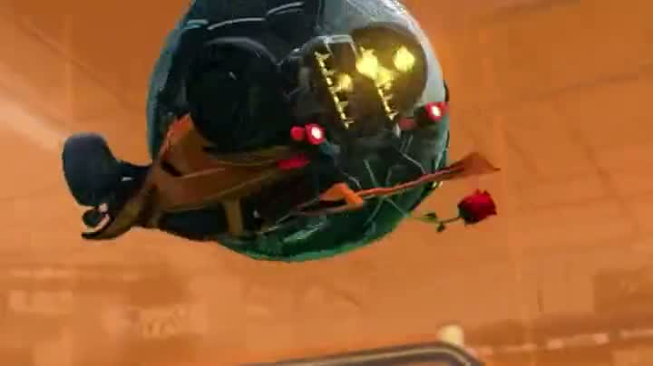
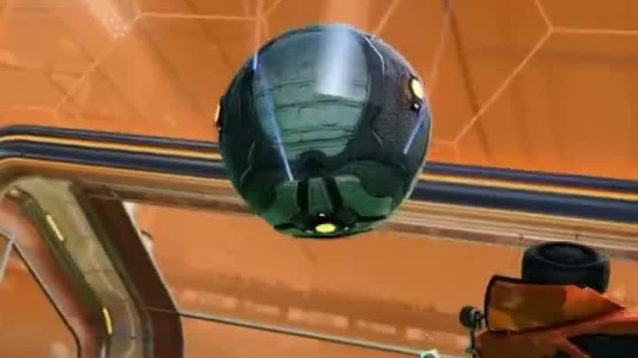

Aprendizaje por refuerzo · Método experimental
Opponent Pool Self-Play
¿Ayuda entrenar contra versiones anteriores de uno mismo? Proyecto personal sobre el entorno de Rocket League de moanv2/rlgym, con licencia MIT. El criterio se escribió y se congeló antes de lanzar nada; después se ejecutaron seis entrenamientos y se evaluaron 720 partidas una sola vez. La respuesta es que no se puede afirmar. El bot original no es obra mía: lo mío es la infraestructura experimental.
Imágenes de Rocket League a modo de contexto visual: gameplay ilustrativo de terceros, NO son grabaciones del experimento ni de ningún agente entrenado aquí · Based on moanv2/rlgym (MIT) · Infraestructura experimental · opponent pools · reproducibilidad
La pregunta
Entrenar contra quien fuiste, no contra quien eres.
En self-play un agente aprende jugando contra sí mismo. La versión de siempre lo enfrenta a su copia más reciente, y eso tiene un riesgo conocido: la estrategia puede dar vueltas en círculo y olvidar lo que ya sabía ganar.
La alternativa que se puso a prueba es un opponent pool: en vez de jugar siempre contra su yo de hoy, el agente sortea el rival entre todas las copias guardadas a lo largo del entrenamiento. La idea no es nueva —es fictitious self-play—; la pregunta era si aquí, en este entorno y con este presupuesto de cómputo, cambia algo.
El experimento se preregistró: dos brazos, tres semillas cada uno, el mismo número de partidas y un criterio de decisión escrito y congelado por SHA256 antes de lanzar nada. Los scripts se niegan a arrancar si el protocolo ha cambiado. Eso no hace el resultado mejor; hace que no se pueda mover la portería después de verlo.
El entorno y el agente de partida son de moanv2/rlgym, con licencia MIT: el bot original no es obra mía y no lo he mejorado. Lo mío son las 5.401 líneas del experimento —el adaptador de rival congelado, el pool, la ejecución en procesos aislados y el análisis—, sin tocar ni un archivo heredado.
Ciclo del opponent pool. La política actual guarda un snapshot en un pool histórico de cinco copias —C0, t menos 4, t menos 3, t menos 2 y t menos 1—; de ahí se sortea una, que queda como rival congelado y juega un episodio 1v1 contra el aprendiz; la actualización vuelve a la política actual y el ciclo empieza otra vez. En el brazo A el pool guarda solo la copia más reciente.
Qué construí yo
Lo heredado, lo mío y lo que salió.
El entorno, el algoritmo y las políticas de partida son de moanv2/rlgym, con licencia MIT. Lo que añadí son 5.401 líneas de infraestructura experimental, sin tocar ni un archivo heredado.
La zona de arriba no es obra mía y por eso va en gris. El bot de Rocket League ya existía, funcionaba y no lo he mejorado: mi trabajo empieza donde termina el suyo.
La del medio es lo que construí: el adaptador que expone un solo agente para que a PPO solo le llegue la experiencia del aprendiz, el pool con su retención y su C0 protegido, el muestreo reproducible, los manifiestos con hashes, la ejecución en procesos aislados con reanudación, y el análisis.
La de abajo es lo que salió, que no es lo que esperaba: un resultado inconcluyente, una puerta que se cerró y una hipótesis falsada.
Arquitectura en tres zonas. Heredado, de moanv2/rlgym: RLGym, PPO, simulación y políticas base. Mi aportación: inicialización por proceso, rival congelado, opponent pool, snapshots, hashes, recuperación, evaluación, protocolos y análisis. Resultados: H1, la puerta de H2, el diagnóstico de recompensa y la falsación.

Seis entrenamientos. 720 partidas. Una sola evaluación.
El resultado
El intervalo cruza el cero.
Las seis corridas terminaron y se evaluaron una sola vez: 720 partidas contra un rival fijo. La diferencia entre los dos brazos fue de −0,83 puntos porcentuales, con un intervalo de confianza del 95% que va de −3,89 a +2,22.
Ese intervalo cruza el cero por los dos lados. Con el criterio preregistrado eso es un resultado inconcluyente: no se puede afirmar que el opponent pool ayude, y tampoco que estorbe. No es un empate demostrado, es una medida demasiado imprecisa para separarlos.
La unidad experimental es la corrida, no la partida. Con tres semillas por brazo el intervalo sale ancho por construcción, y estrecharlo tratando las 720 partidas como si fueran independientes habría sido hacerse trampa a uno mismo.
Se evaluó una vez y se paró. No hubo una segunda tanda, ni un reajuste después de ver los números, ni una versión mejorada del experimento escrita a posteriori.
Cuadro de instrumentos. Dos diales sobre una escala de 0 a 10 por ciento: el brazo A marca 5,00 por ciento y el brazo B 4,17. Debajo, un eje con el cero marcado y la banda del intervalo de confianza del 95%, que va de −3,89 a +2,22 puntos porcentuales y cruza el cero; la diferencia observada, −0,83, cae dentro. El veredicto es INCONCLUYENTE.
El diagnóstico
Tres medidas, y ninguna causa demostrada.
Señales que limitaron la capacidad del experimento para distinguir los dos brazos. Son tres medidas del estado en que quedó, no tres causas: ninguna está demostrada como el motivo de nada.
La primera es el suelo. Los dos brazos ganan alrededor del 5% de las partidas contra el rival de referencia. Cuando las dos condiciones que se comparan están pegadas al suelo, la diferencia entre ellas tiene muy poco sitio donde aparecer.
La segunda es la deriva: al terminar, los pesos de la red se habían alejado un 1,55% de su punto de partida. Y crece como la raíz del número de muestras, no en línea recta —comprobado en cinco puntos—, así que extrapolarla linealmente, que fue mi primera estimación, da un número que después no se cumple.
La tercera es la diversidad medida dentro del pool: 0,0074. Un pool cuyas copias se parecen mucho entre sí ofrece, en la práctica, rivales parecidos. Eso es coherente con no ver diferencia, pero coherente no es demostrado: no se ha establecido cuál de las tres cosas, si es que alguna, produce el resultado.
Embudo con tres medidas: alrededor del 5% de partidas ganadas por los dos brazos, 1,55% de deriva de los pesos al terminar y 0,0074 de diversidad dentro del pool.
La puerta
Se cayeron dos, y no se entrenó.
El segundo experimento, H2, estaba pensado para levantar ese suelo con diez corridas más largas. Antes de lanzarlas había cuatro puertas escritas de antemano, y la regla también estaba escrita: si alguna se cae, no se entrena.
Se cayeron dos. La deriva no llegó al umbral preinscrito y el pool no alcanzó la diversidad mínima. Las otras dos —que la fase corta terminara sin fallos y que el cómputo cupiera en el presupuesto— sí se cumplieron.
La decisión fue NO-GO y las diez corridas no se ejecutaron. Bajar un umbral después de verlo fallar habría convertido la puerta en un trámite, que es exactamente lo que la puerta existía para impedir.
Es el resultado que menos enseña un portfolio y del que más aprendí: la parte cara del método es respetarlo cuando dice que pares.
Panel de cuatro testigos. G1, la fase corta se completa sin fallos: cumple. G2, deriva de los pesos, 0,0310 medido frente a 0,0465 requerido: falla. G3, diversidad del pool, 0,0135 frente a 0,0148 requerido: falla. G4, coste de cómputo: cumple. Indicador maestro: NO-GO, detenido antes del entrenamiento completo.

Y entonces hubo que mirar la recompensa.
El diagnóstico de la recompensa
Tres canales, ninguna mejora sostenida.
Si el opponent pool no separaba nada, quedaba mirar la recompensa. Tres configuraciones, medidas a 100k, 250k y 500k muestras contra el mismo rival fijo.
Los tres canales comparten eje vertical a propósito. Escalar cada uno a su propio máximo habría hecho que tres curvas de aspecto idéntico dijeran cosas distintas, que es la forma más fácil de mentir con una gráfica sin tocar un solo número.
D_A empieza arriba y baja sin parar. D_B sube en el tramo central y vuelve a caer. D_C aguanta y se hunde al final. Ninguna de las tres sube y se queda arriba.
Es un diagnóstico de la recompensa, no una explicación. Dice que ninguna de las tres produjo una mejora sostenida; no dice por qué.
Tres canales de telemetría sobre la misma escala vertical, medidos a 100k, 250k y 500k muestras. D_A: 72,0, luego 67,5, luego 61,5. D_B: 14,0, luego 37,5, luego 22,5. D_C: 56,5, luego 52,5, luego 16,0. Ninguna de las tres mejora de forma sostenida.
La falsación
La predicción era subir. Bajaron.
Quedaba una hipótesis por poner a prueba. Si el problema era que la recompensa moldeada empujaba al agente hacia comportamientos que no ganan partidas, reducir ese moldeado debería mejorar el resultado. Se escribió esa predicción y se probó.
Dos configuraciones nuevas, contra el mismo rival fijo y con la misma semilla: R1 con el moldeado dividido entre diez y R2 sólo con eventos. Sobre 200 partidas ganaron el 2,0% y el 2,5%. La predicción no sólo no se cumplió: el resultado fue el contrario del anunciado.
Reducir el moldeado no resolvió el problema. Y eso no convierte a ninguna de las otras configuraciones en la buena: ninguna de las cinco produjo una mejora sostenida al avanzar el entrenamiento, y la causa de lo observado sigue sin identificarse.
Con eso se cerró la línea experimental. Sin una R3, sin una H3 y sin volver a tocar los hiperparámetros después de haber visto los resultados.
Cinco medidores en anillo, de mayor a menor: stage_1_basics 61,5, stage_2_offense 22,5, sin ZeroSum 16,0, R1 con el moldeado dividido entre diez 2,0 y R2 sólo con eventos 2,5. Los dos últimos, marcados, son los que la predicción decía que subirían. La predicción falló en la dirección contraria: hipótesis falsada.
El trabajo
Un experimento que no salió.
No hay aquí un bot mejor. La hipótesis quedó sin confirmar, el segundo experimento se detuvo en su propia puerta y la hipótesis de recambio quedó falsada. La causa de lo que se observó sigue sin identificarse, y darla por conocida sería inventarse el final.
Lo que sí hay es el método entero y auditable: el criterio escrito antes de mirar, protocolos congelados por SHA256 que los propios scripts verifican al arrancar, una sola evaluación, intervalos de confianza con la corrida como unidad experimental, y los errores propios anotados donde se cometieron en vez de barridos. El informe completo incluye las decisiones que salieron mal.
Construido sobre moanv2/rlgym, con licencia MIT. El bot de Rocket League no es obra mía; el experimento sobre él, sí.